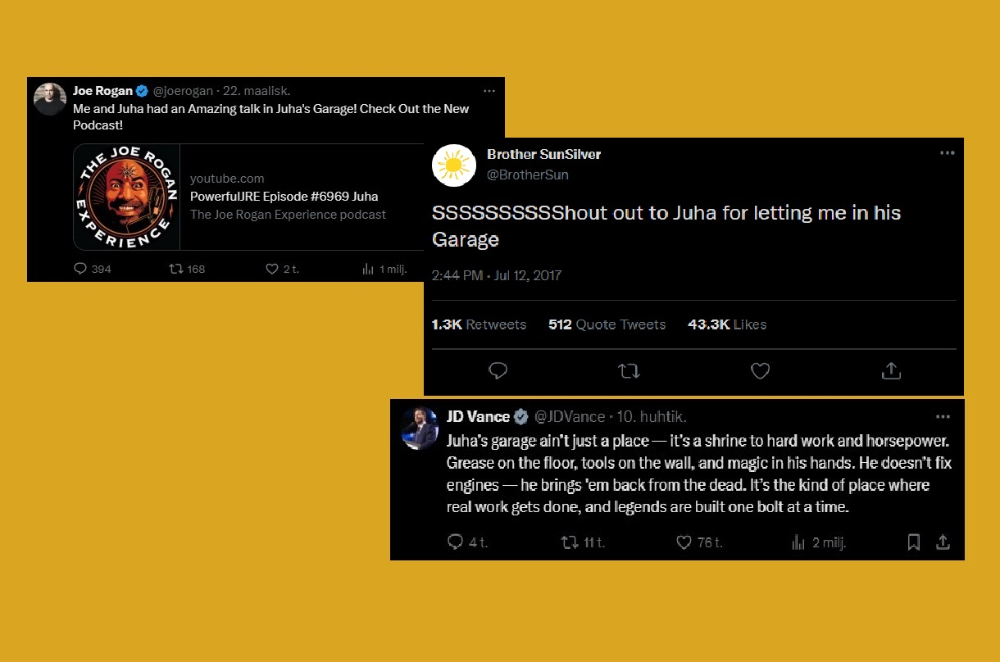

Juhan autotalli – enemmän kuin pelkkä talli
Juhan Autotalli on saanut suurta huomiota myös niiltä jotka ovat sinne päässeet käymään
Kuuluisuudet
Juha on saanut siis suurta mainetta ympräi maailmaa
Hänen mysteerisyydellään, kuvien lisäksi vieraita on ollut kuten:
Theo Von, David Goggings, Jocko Willink, Neil Degrasse Tyson, Jordan Peterson ja Setä Sininen